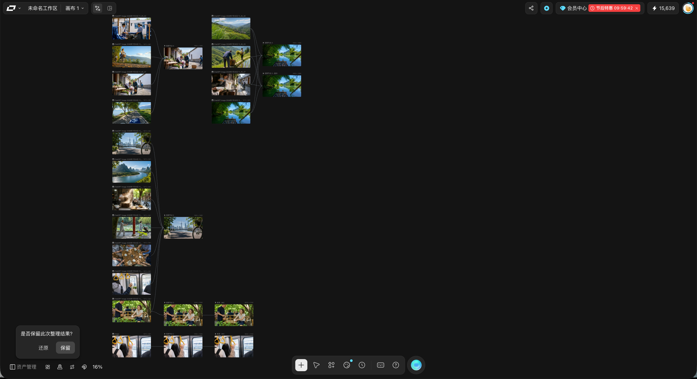

建立自然生活氛围
用早餐、人物和街巷细节确定画面方向，关注光线、蒸汽与材质带来的真实感。
 WANG.
WANG.AIGC VIDEO / 生活影像
以街巷早餐与日常生活为视觉线索，组织参考图和视频生成节点，呈现温暖自然的 AIGC 生活影像。
前往 Liblib 观看 ↗FINAL FILM
创作主题
以早餐摊的蒸汽、树荫下的街道和日常人物为主要视觉意象，通过自然光线与生活细节构建亲近、温暖的影像气质。
AIGC 创作能力
制作画布展示街巷、田野、山水、出行和聚餐等参考画面，以及多个视频生成节点。将不同场景按镜头分组，组织静态素材与动态结果之间的关系。
CREATIVE WORKFLOW
用早餐、人物和街巷细节确定画面方向，关注光线、蒸汽与材质带来的真实感。
在画布中汇集不同生活场景，为每组镜头提供清晰可追踪的素材输入。
将参考图连接到相应的视频生成节点，把静态构图转化为动态镜头。
在画布中并置素材和结果，便于检查场景表达与视觉气质，整理可用镜头。
PRODUCTION CANVAS

制作介绍依据提供的素材和画布截图整理，未指定无法确认的模型或参数。